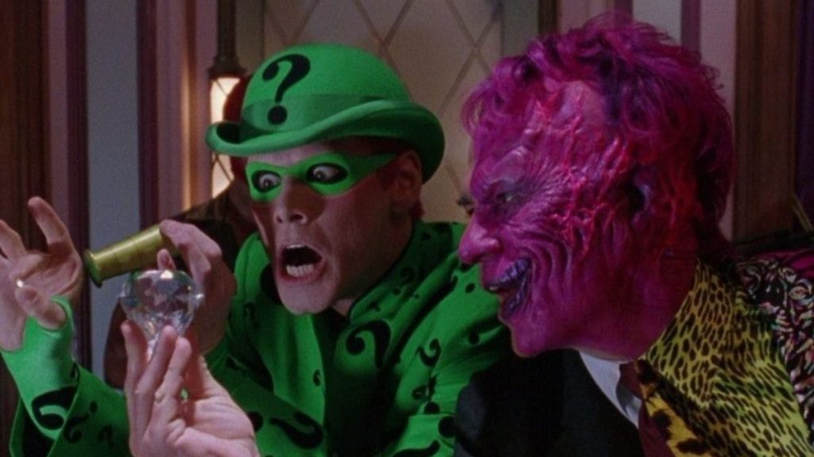

DO CHARADA AO SILÊNCIO
Um das histórias mais destacadas da história do Charada é a Batman: Silêncio. Um dos arcos mais importantes do vilão é o que ele contrai câncer e busca incessantemente por uma cura. Ele acaba procurando Ra’s Al Ghul e acessa ao Poço de Lázaro, pagando um alto preço por sua escolha. Suas habilidades aumentam, deixando-o mais poderoso e insano com um intelecto ainda maior. O Charada assume uma nova identidade, se tornando o Silêncio, sendo um adversário perigoso demais para o Batman, descobrindo até a verdadeira identidade do herói.
PRINCIPAIS APARIÇÕES DO CHARADA EM OUTRAS MÍDIAS
O personagem já teve diversas participações em séries, filmes e em outras mídias. Nas animações do Cavaleiro das Trevas, ele fora dublado por John Glover e Robert Englund. Já nos games, sua voz era de Wally Winger, na franquia Batman Arkham. Já nos filmes, tivemos o icônico Jim Carrey dando vida ao vilão em Batman Eternamente, fazendo uma combinação letal com Tommy Lee Jones de Duas-Caras. No mundo das séries de TV, Frank Gorshin e John Astin foram os adversários de Adam West nos anos 60. Em 2014, Edward Nygma era um CSI, interpretado por Cory Michael Smith em Gotham. Atualmente, em The Batman, teremos o excelente Paul Dano fazendo o papel para a alegria dos fãs.